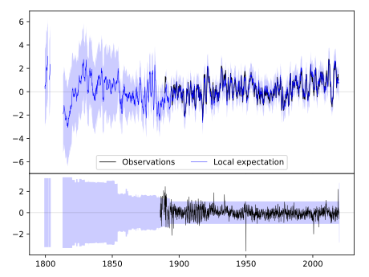
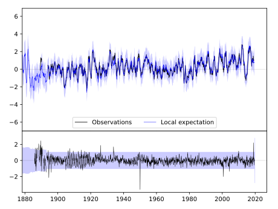
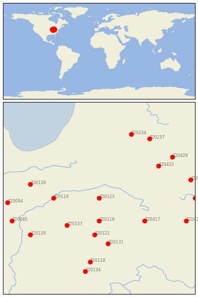

MARION 2 N [USA]


| Neighbour | Name | Country | Distance | Lon/Lat | Years |
|---|
| 720123 | MARION 2 N | USA | 0 | -85.7, 40.6 | 1885-2019 |
| 720116 | ANDERSON SEWAGE PLT | USA | 55 | -85.7, 40.1 | 1893-2019 |
| 720119 | DELPHI 2 N | USA | 84 | -86.7, 40.6 | 1893-2019 |
| 720137 | WHITESTOWN | USA | 89 | -86.4, 40.0 | 1893-2019 |
| 720121 | GREENFIELD | USA | 89 | -85.8, 39.8 | 1893-2019 |
| 720417 | GREENVILLE WTP | USA | 101 | -84.7, 40.1 | 1886-2019 |
| 720131 | RUSHVILLE | USA | 112 | -85.5, 39.6 | 1883-2019 |
| 720128 | RENSSELAER | USA | 130 | -87.2, 40.9 | 1864-2019 |
| 720422 | DEFIANCE | USA | 134 | -84.4, 41.3 | 1887-2019 |
| 720129 | ROCKVILLE | USA | 155 | -87.2, 39.8 | 1862-2019 |
| 720118 | COLUMBUS | USA | 156 | -85.9, 39.2 | 1884-2019 |
| 720234 | COLDWATER ST SCHOOL | USA | 166 | -85.0, 42.0 | 1868-2019 |
| 720429 | WAUSEON WTP | USA | 167 | -84.1, 41.5 | 1870-2019 |
| 720094 | HOOPESTON 1 NE | USA | 169 | -87.7, 40.5 | 1887-2019 |
| 720427 | URBANA WWTP | USA | 170 | -83.8, 40.1 | 1854-2019 |
| 720085 | DANVILLE | USA | 170 | -87.6, 40.1 | 1893-2019 |
| 720237 | HILLSDALE | USA | 171 | -84.6, 41.9 | 1880-2019 |
| 720416 | FINDLAY WPCC | USA | 174 | -83.7, 41.0 | 1886-2019 |
| 720418 | KENTON | USA | 177 | -83.6, 40.6 | 1862-2019 |
| 720134 | SEYMOUR 2 N | USA | 179 | -86.0, 39.0 | 1887-2019 |